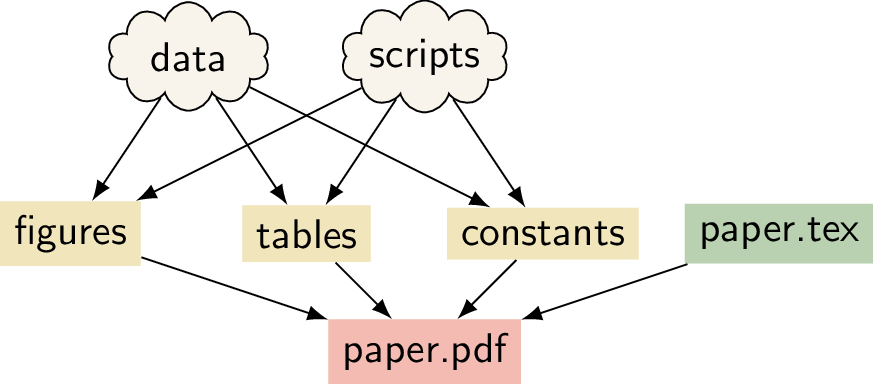

Reproducibility with Make
Prerequisites / recommended skill level
| Prerequisite | Importance | Notes |
|---|---|---|
| Experience with the command line | Necessary | |
| Version control | Helpful | Experience using git is useful to follow along with examples |
Recommended skill level: intermediate
Table of contents
- Summary
- An Introduction to Make
- Learn Make by Example
- A Real Reproducible Paper using Make
- Including numerical results and tables
- Further Reading
- Glossary
- Appendix
Summary
A data science or research project can be seen as a tree of dependencies: the report depends on the figures and tables, and these in turn depend on the data and the analysis scripts used to process this data (illustrated in the figure below). Make is a tool for creating output files from their dependencies through pre-specified rules. It is possible to combine these two ideas to create a reproducible project with Make. In this chapter we give an introduction to Make and provide a tutorial on how Make can be used for a data analysis pipeline. We also describe a real-world reproducible research project that uses Make to go from the raw input data to the experiments all the way to the pdf file of the paper!
 A schematic for a research project that uses LaTeX.
An Introduction to Make
What is Make
Make is a build automation tool. It uses a configuration file called a Makefile that contains the rules for what to build. Make builds targets using recipes. Targets can optionally have prerequisites. Prerequisites can be files on your computer or other targets. Make determines what to build based on the dependency tree of the targets and prerequisites (technically, this is a directed acyclic graph). It uses the modification time of prerequisites to update targets only when needed.
Why use Make for Reproducibility?
There are several reasons why Make is a good tool to use for reproducibility:
- Make is easy to learn
- Make is available on many platforms
- Make is flexible
- Many people are already familiar with Make
- Makefiles reduce cognitive load because as long as the common Make targets
allandcleanare present (explained below), you can be up and running without having to read lengthy instructions. This is especially useful when you work on someone else's project or on one that you haven't used in a long time. - Makefiles are human-readable and machine-readable text files. So instead of writing instructions to a human for how to build a report or output, you can provide a Makefile with instructions that can be read by a human and executed by a computer.
- Because Makefiles are text files they are easy to share and keep in version control.
- Using Make doesn't exclude using other tools such as Travis and Docker.
With a clever Makefile, you can share a complete analysis (code, data, and computational workflows) and let collaborators or the readers of your paper recompute your results. By using tools such as LaTeX, you can even generate a complete manuscript that includes freshly computed figures and results! This can increase the trust in the research output that you generate, it can make your research more accessible, and it can make collaborating easier. This chapter can show you how to get started.
Learn Make by Example
One of the things that might scare people off from using Make is that existing Makefiles can seem daunting and it may seem difficult to tailor to your own needs. In this hands-on tutorial we will iteratively construct a Makefile for a real data analysis project. The idea is to explain different features of Make by iterating through several versions of a Makefile for this project. Hopefully the experience that you gain from this tutorial allows you to create Makefiles for your own projects.
We will create a Makefile for a data analysis pipeline. The task is as
follows:
Task: Given some datasets, create a summary report (in pdf) that contains the histograms of these datasets.
(Of course this data task is very simple to focus on how to use Make.)
Throughout the tutorial code blocks that start with a dollar sign ($) are
intended to be typed in the terminal.
Setting up
We have created a basic repository for this task, that already contains everything that we need (except the Makefile of course!). To start, clone the base repository using git:
$ git clone https://github.com/alan-turing-institute/IntroToMake
This basic repository contains all the code that we'll need in this tutorial, and should have this content:
.
├── data/
│ ├── input_file_1.csv
│ └── input_file_2.csv
├── LICENSE
├── output/
├── README.md
├── report/
│ └── report.tex
└── scripts/
└── generate_histogram.py
- data: directory with two datasets that we're going to analyse
- report: the input directory for the report
- scripts: directory for the analysis script
- output: output directory for the figures and the report
You'll notice that there are two datasets in the data directory
(input_file_1.csv and input_file_2.csv) and that there is already a
basic Python script in scripts and a basic report LaTeX file in
report.
If you want to follow along, ensure that you have the matplotlib and
numpy packages installed:
$ pip install matplotlib numpy
You will also need a working version of pdflatex and, of course, make.
For installation instructions for Make, see the installation instructions
below.
Makefile no. 1 (The Basics)
Let's create our first Makefile. In the terminal, move into the
IntroToMake repository that you just cloned:
$ cd IntroToMake
Using your favourite editor, create a file called Makefile with the
following contents:
# Makefile for analysis report
output/figure_1.png: data/input_file_1.csv scripts/generate_histogram.py
python scripts/generate_histogram.py -i data/input_file_1.csv -o output/figure_1.png
output/figure_2.png: data/input_file_2.csv scripts/generate_histogram.py
python scripts/generate_histogram.py -i data/input_file_2.csv -o output/figure_2.png
output/report.pdf: report/report.tex output/figure_1.png output/figure_2.png
cd report/ && pdflatex report.tex && mv report.pdf ../output/report.pdf
The indentation in each of the recipes are tabs, Makefiles do not accept indentation with spaces.
You should now be able to type:
$ make output/report.pdf
If everything worked correctly, the two figures will be created and pdf report will be built.
Let's go through the Makefile in a bit more detail. We have three rules, two
for the figures and one for the report. Let's look at the rule for
output/figure_1.png first. This rule has the target
output/figure_1.png that has two prerequisites: data/input_file_1.csv
and scripts/generate_histogram.py. By giving the output file these
prerequisites it will be updated if either of these files changes. This is one
of the reasons why Make was created: to update output files when source files
change.
You'll notice that the recipe line calls Python with the script name and uses
command line flags (-i and -o) to mark the input and output of the
script. This isn't a requirement for using Make, but it makes it easy to see
which file is an input to the script and which is an output.
The rule for the PDF report is very similar, but it has three prerequisites (the LaTeX source and both figures). Notice that the recipe changes the working directory before calling LaTeX and also moves the generated PDF to the output directory. We're doing this to keep the LaTeX intermediate files in the report directory. However, it's important to distinguish the above rule from the following:
# don't do this
output/report.pdf: report/report.tex output/figure_1.png output/figure_2.png
cd report/
pdflatex report.tex
mv report.pdf ../output/report.pdf
This rule places the three commands on separate lines. However, Make executes each line independently in a separate subshell, so changing the working directory in the first line has no effect on the second, and a failure in the second line won't stop the third line from being executed. Therefore, we combine the three commands in a single recipe above.
This is what the dependency tree looks like for this Makefile:
 The
dependency graph for our first Makefile, created using
[makefile2graph](#tools). Notice the similarity to the figure at the
top!
The
dependency graph for our first Makefile, created using
[makefile2graph](#tools). Notice the similarity to the figure at the
top!
Makefile no. 2 (all and clean)
In our first Makefile we have the basic rules in place. We could stick with this if we wanted to, but there are a few improvements we can make:
We now have to explicitly call
make output/report.pdfif we want to make the report.We have no way to clean up and start fresh.
Let's remedy this by adding two new targets: all and clean. In your
editor, change the Makefile contents to add the all and clean rules as
follows:
# Makefile for analysis report
all: output/report.pdf
output/figure_1.png: data/input_file_1.csv scripts/generate_histogram.py
python scripts/generate_histogram.py -i data/input_file_1.csv -o output/figure_1.png
output/figure_2.png: data/input_file_2.csv scripts/generate_histogram.py
python scripts/generate_histogram.py -i data/input_file_2.csv -o output/figure_2.png
output/report.pdf: report/report.tex output/figure_1.png output/figure_2.png
cd report/ && pdflatex report.tex && mv report.pdf ../output/report.pdf
clean:
rm -f output/report.pdf
rm -f output/figure_*.png
Note that we've added the all target to the top of the file. We do this
because Make executes the first target when no explicit target is given. So
you can now type make on the command line and it would do the same as
make all. Also, note that we've only added the report as the prerequisite
of all because that's our desired output and the other rules help to build
that output. If you have multiple outputs, you could add these as further
prerequisites to the all target. Calling the main target all is a
convention of Makefiles that many people follow.
The clean rule is typically at the bottom, but that's more style than
requirement. Note that we use the -f flag to rm to make sure it
doesn't complain when there is no file to remove.
You can try out the new Makefile by running:
$ make clean
$ make
Make should remove the output and intermediate files after the first command, and generate them again after the second.
Makefile no. 3 (Phony Targets)
Typically, all and clean are defined as so-called Phony
Targets.
These are targets that don't actually create an output file. Such targets will
always be run if they come up in a dependency, but will no longer be run if a
directory/file is ever created that is called all or clean. We
therefore add a line at the top of the Makefile to define these two as phony
targets:
# Makefile for analysis report
.PHONY: all clean
all: output/report.pdf
output/figure_1.png: data/input_file_1.csv scripts/generate_histogram.py
python scripts/generate_histogram.py -i data/input_file_1.csv -o output/figure_1.png
output/figure_2.png: data/input_file_2.csv scripts/generate_histogram.py
python scripts/generate_histogram.py -i data/input_file_2.csv -o output/figure_2.png
output/report.pdf: report/report.tex output/figure_1.png output/figure_2.png
cd report/ && pdflatex report.tex && mv report.pdf ../output/report.pdf
clean:
rm -f output/report.pdf
rm -f output/figure_*.pdf
Phony targets are also useful when you want to use Make recursively. In that
case you would specify the subdirectories as phony targets. You can read more
about phony targets in the
documentation,
but for now it's enough to know that all and clean are typically
declared as phony.
Sidenote: another target that's typically phony is test, in case you have a directory of tests called test and want to have a target to run them that's also called test.
Makefile no. 4 (Automatic Variables and Pattern Rules)
There's nothing wrong with the Makefile we have now, but it's somewhat verbose because we've declared all the targets explicitly using separate rules. We can simplify this by using Automatic Variables and Pattern Rules.
Automatic Variables. With automatic variables we can use the names of the prerequisites and targets in the recipe. Here's how we would do that for the figure rules:
# Makefile for analysis report
.PHONY: all clean
all: output/report.pdf
output/figure_1.png: data/input_file_1.csv scripts/generate_histogram.py
python scripts/generate_histogram.py -i $< -o $@
output/figure_2.png: data/input_file_2.csv scripts/generate_histogram.py
python scripts/generate_histogram.py -i $< -o $@
output/report.pdf: report/report.tex output/figure_1.png output/figure_2.png
cd report/ && pdflatex report.tex && mv report.pdf ../output/report.pdf
clean:
rm -f output/report.pdf
rm -f output/figure_*.pdf
We've replaced the input and output filenames in the recipes respectively by
$<, which denotes the first prerequisite and $@ which denotes the
target. You can remember $< because it's like an arrow that points to
the beginning (first prerequisite), and you can remember $@ (dollar
at) as the target you're aiming
at.
There are more automatic variables that you could use, see the documentation.
Pattern Rules. Notice that the recipes for the figures have become
identical! Because we don't like to repeat ourselves, we can combine the two
rules into a single rule by using pattern rules. Pattern rules allow you to
use the % symbol as a wildcard and combine the two rules into one:
# Makefile for analysis report
.PHONY: all clean
all: output/report.pdf
output/figure_%.png: data/input_file_%.csv scripts/generate_histogram.py
python scripts/generate_histogram.py -i $< -o $@
output/report.pdf: report/report.tex output/figure_1.png output/figure_2.png
cd report/ && pdflatex report.tex && mv report.pdf ../output/report.pdf
clean:
rm -f output/report.pdf
rm -f output/figure_*.pdf
The % symbol is now a wildcard that (in our case) takes the value 1 or
2 based on the input files in the data directory. You can check that
everything still works by running make clean followed by make.
An advantage of this is that if you now want to add another dataset, say
input_file_3, then you would only need to add that to the rule for the
report!
Makefile no. 5 (Wildcards and Path Substitution)
When Makefiles get more complex, you may want to use more advanced features such as building outputs for all the files in an input directory. While pattern rules will get you a long way, Make also has features for wildcards and string or path manipulation for when pattern rules are insufficient.
While previously our input files were numbered, we'll now switch to a scenario
where they have more meaningful names. Let's switch over to the big_data
branch:
$ git stash # stash the state of your working directory
$ git checkout big_data # checkout the big_data branch
The directory structure now looks like this:
├── data/
│ ├── action.csv
│ ├── ...
│ ├── input_file_1.csv
│ ├── input_file_2.csv
│ ├── ...
│ └── western.csv
├── LICENSE
├── output/
├── README.md
├── report/
│ └── report.tex
└── scripts/
└── generate_histogram.py
As you can see, the data directory now contains additional input files that are named more meaningfully (the data are IMBD movie ratings by genre). Also, the report.tex file has been updated to work with the expected figures.
We'll adapt our Makefile to create a figure in the output directory called
histogram_{genre}.png for each {genre}.csv file, while excluding the
input_file_{N}.csv files.
Sidenote: if we were to remove the
input_file_{N}.csvfiles, pattern rules would be sufficient here. This highlights that sometimes your directory structure and Makefile should be developed hand in hand.
Before changing the Makefile, run
$ make clean
to remove the output files.
We'll show the full Makefile first, and then describe the different lines in more detail. The complete file is:
# Makefile for analysis report
ALL_CSV = $(wildcard data/*.csv)
INPUT_CSV = $(wildcard data/input_file_*.csv)
DATA = $(filter-out $(INPUT_CSV),$(ALL_CSV))
FIGURES = $(patsubst data/%.csv,output/figure_%.png,$(DATA))
.PHONY: all clean
all: output/report.pdf
$(FIGURES): output/figure_%.png: data/%.csv scripts/generate_histogram.py
python scripts/generate_histogram.py -i $< -o $@
output/report.pdf: report/report.tex $(FIGURES)
cd report/ && pdflatex report.tex && mv report.pdf ../$@
clean:
rm -f output/report.pdf
rm -f $(FIGURES)
First, we use the wildcard function to create a variable that lists all
the CSV files in the data directory and one that lists only the old
input_file_{N}.csv files:
ALL_CSV = $(wildcard data/*.csv)
INPUT_CSV = $(wildcard data/input_file_*.csv)
A code convention for Makefiles is to use all capitals for variable names and define them at the top of the file.
Next, we create a variable to list only the data files that we're interested
in by filtering out the INPUT_CSV from ALL_CSV:
DATA = $(filter-out $(INPUT_CSV),$(ALL_CSV))
This line uses the
filter-out
function to remove items in the INPUT_CSV variable from the ALL_CSV
variable. Note that we use both the $( ... ) syntax for functions and
variables. Finally, we'll use the DATA variable to create a FIGURES
variable with the desired output:
FIGURES = $(patsubst data/%.csv,output/figure_%.png,$(DATA))
Here we've used the
patsubst
function to transform the input in the DATA variable (that follows the
data/{genre}.csv pattern) to the desired output filenames (using the
output/figure_{genre}.png pattern). Notice that the % character marks
the part of the filename that will be the same in both the input and output.
Now we use these variables for the figure generation rule as follows:
$(FIGURES): output/figure_%.png: data/%.csv scripts/generate_histogram.py
python scripts/generate_histogram.py -i $< -o $@
This rule again applies a pattern: it takes a list of targets ($(FIGURES))
that all follow a given pattern (output/figure_%.png) and based on that
creates a prerequisite (data/%.csv). Such a pattern rule is slightly
different from the one we saw before because it uses two : symbols. It is
called a static pattern
rule.
Of course we have to update the report.pdf rule as well:
output/report.pdf: report/report.tex $(FIGURES)
cd report/ && pdflatex report.tex && mv report.pdf ../$@
and the clean rule:
clean:
rm -f output/report.pdf
rm -f $(FIGURES)
If you run this Makefile, it will need to build 28 figures. You may want to
use the -j flag to make to build these targets in parallel!
$ make -j 4
The ability to build targets in parallel is quite useful when your project has many dependencies!
The resulting PDF file should now look like this:
 A compressed
view of the report with histograms for all genres.
A compressed
view of the report with histograms for all genres.
Debugging Makefiles
When writing a Makefile, it can sometimes be useful to be able to see the
values of variables to catch mistakes or bugs in the Makefile. To facilitate
this, Make contains two commands: info and error, and there is a debug
mode to Make.
With the info command you can print the current value of a variable to
stdout, while Make is processing the file. For instance, in the Makefile above
you could add:
$(info $$DATA = $(DATA))
This will print DATA = data/action.csv ... data/western.csv.
With the error command you can stop the execution of Make at a certain
point in the Makefile. This is useful when you want to print the value of a
variable and not run Make any further:
$(error $$DATA = $(DATA))
Finally, you can also debug the Makefile by running Make with the debug flag:
make -d. This will print all the rules (including built-in ones) that Make
tries for each of the targets, and whether or not a rule needs to be run.
If you only want to print the rules that Make will run and not actually run
them, you can use make -n. These last two options can also be combined, so
that you see the debug output and Make doesn't run anything: make -dn.
A Real Reproducible Paper using Make
In the tutorial above we used IMDB movie ratings for different genres as example data. This data was obtained from a dataset shared on Kaggle as a CSV file. The file looks like this:
fn,tid,title,wordsInTitle,url,imdbRating,ratingCount,duration,year,type,nrOfWins,nrOfNominations,nrOfPhotos,nrOfNewsArticles,nrOfUserReviews,nrOfGenre,Action,Adult,Adventure,Animation,Biography,Comedy,Crime,Documentary,Drama,Family,Fantasy,FilmNoir,GameShow,History,Horror,Music,Musical,Mystery,News,RealityTV,Romance,SciFi,Short,Sport,TalkShow,Thriller,War,Western
titles01/tt0012349,tt0012349,Der Vagabund und das Kind (1921),der vagabund und das kind,http://www.imdb.com/title/tt0012349/,8.4,40550,3240,1921,video.movie,1,0,19,96,85,3,0,0,0,0,0,1,0,0,1,1,0,0,0,0,0,0,0,0,0,0,0,0,0,0,0,0,0,0
titles01/tt0015864,tt0015864,Goldrausch (1925),goldrausch,http://www.imdb.com/title/tt0015864/,8.3,45319,5700,1925,video.movie,2,1,35,110,122,3,0,0,1,0,0,1,0,0,0,1,0,0,0,0,0,0,0,0,0,0,0,0,0,0,0,0,0,0
titles01/tt0017136,tt0017136,Metropolis (1927),metropolis,http://www.imdb.com/title/tt0017136/,8.4,81007,9180,1927,video.movie,3,4,67,428,376,2,0,0,0,0,0,0,0,0,1,0,0,0,0,0,0,0,0,0,0,0,0,1,0,0,0,0,0,0
titles01/tt0017925,tt0017925,Der General (1926),der general,http://www.imdb.com/title/tt0017925/,8.3,37521,6420,1926,video.movie,1,1,53,123,219,3,1,0,1,0,0,1,0,0,0,0,0,0,0,0,0,0,0,0,0,0,0,0,0,0,0,0,0,0
While on the surface this looks like a regular CSV file, when you try to open
it with the Python CSV library, or Pandas, or R's read_csv, or even
readr:read_csv, the data is not loaded correctly. This happens because the
CSV file uses an escape character \ for movie names that have commas in
them and the CSV readers don't automatically detect this variation in the CSV
format. It turns out that this is quite a common issue for data scientists:
CSV files are often messy and use an uncommon dialect: such as strange delimiters and
uncommon quote characters. Collectively, data scientists waste quite
some time on these data wrangling issues where manual intervention is needed.
But this problem is also not that easy to solve: to a computer a CSV file is
simply a long string of characters and every dialect will give you some
table, so how do we determine the dialect accurately in general?
Recently, researchers from the Alan Turing Institute have presented a method that achieves 97% accuracy on a large corpus of CSV files, with an improvement of 21% over existing approaches on non-standard CSV files. This research was made reproducible through the use of Make and is available through an online repository: https://github.com/alan-turing-institute/CSV_Wrangling.
Below we will briefly describe what the Makefile for such a project looks like. For the complete file, please see the repository. The Makefile consists of several sections:
Data collection: because the data is collected from public sources, the repository contains a Python script that allows anyone to download the data through a simple
make datacommand.All the figures, tables, and constants used in the paper are generated based on the results from the experiments. To make it easy to recreate all results of a certain type,
.PHONYtargets are included that depend on all results of that type (so you could runmake figures). The rules for these outputs follow the same pattern as those for the figures in the tutorial above. Tables are created as LaTeX files so they can be directly included in the LaTeX source for the manuscript.The rules for the detection results follow a specific signature:
$(OUT_DETECT)/out_sniffer_%.json: $(OUT_PREPROCESS)/all_files_%.txt python $(SCRIPT_DIR)/run_detector.py sniffer $(DETECTOR_OPTS) $< $@
The
%symbol is used to create outputs for both sources of CSV files with a single rule (see Pattern Rules) and the rule uses automatic variables to extract the input and output filenames.Some of the cleaning rules will remove output files that take a while to create. Therefore, these depend on a special
check_cleantarget that asks the user to confirm before proceeding:check_clean: @echo -n "Are you sure? [y/N]" && read ans && [ $$ans == y ]
It is important to emphasize that this file was not created in one go, but was constructed iteratively. The Makefile started as a way to run several dialect detection methods on a collection of input files and gradually grew to include the creation of figures and tables from the result files. Thus the advice for using Make for reproducibility is to start small and start early.
The published Makefile in the repository does not contain the paper, but this
is included in the internal Makefile and follows the same structure as the
report.pdf file in the tutorial above. This proved especially useful for
collaboration as only a single repository needed to be shared that contains
the code, the results, and the manuscript.
Including numerical results and tables
At this point you may be thinking "That's so cool that I can now include figures into my manuscripts! But how exactly does this work for numerical results?"
The reproducible paper linked above shows one way of doing it: After the results are computed, they are written out in the form of a LaTeX table. Here is how one of these tables looks like right after it was computed:
\begin{tabular}{lrrr|rrrr}
Property & HypoParsr & Sniffer & Suitability & Pattern & Type & No Tie & Full\\
\hline
Delimiter & 87.48 & 86.82 & 65.41 & 92.61 & 88.33 & 91.38 & \textbf{94.92}\\
Quotechar & 82.90 & 92.36 & 44.60 & 95.23 & 90.10 & 93.80 & \textbf{97.36}\\
Escapechar & 87.96 & 94.37 & 74.85 & 97.95 & 96.26 & 95.44 & \textbf{99.25}\\
Overall & 80.60 & 85.45 & 38.19 & 90.99 & 83.61 & 90.61 & \textbf{93.75}\\
\hline
\end{tabular}
To include this table into your manuscript, you can use LaTeX's \input{}
function. If the file with the table is called mytable.tex, this command
can insert it into your manuscript:
\begin{table}
\input{mytable}
\end{table}
An alternative is to make use of variables. Instead of creating a table in a separate file, you can write a table skeleton and populate it with variables. The results you compute are associated with the variables, and once your manuscript is compiled, variables are exchanged for real numerical results. Here is how such a table looks like in your manuscript:
\begin{table}
\begin{tabular*}{ccc}
\textbf{Variable} & \textbf{Mean} & \textbf{Std. deviation} \
\hline
Variable 1 & \var1mean & \var1std \
Variable 2 & \var2mean & \var2std \
\end{tabular*}
\end{table}
Ỳou may notice that \var1mean is no standard LaTeX command: It is a variable
that you can define yourself!
How is this done?
Have your script print the results you compute within a \newcommand{}{}
definition into a file, for example like this (simplified Python example):
# this loops to data vectors of two variables (data1, data2), compute the
# mean and standard deviation, and print the results together with the
# variable name ('var1', 'var2')
for name, data in (['var1', data1], ['var2', data2]):
mean = np.mean(data)
std = np.mean(data)
print('\\newcommand{\\%s }{ %f }' % (name + 'mean', mean))
print('\\newcommand{\\%s }{ %f }' % (name + 'std', std))
Let's say the mean of the first dataset is 9.2, the definition would look like
this: \newcommand{\var1mean}{9.2}.
Note that this example uses Python, but you can use any language or method you
are familiar with to print definitions like this.
With this definition, LaTeX exchanges the table cell with \var1mean with the
numeric result from the computation.
You can capture the definitions and write them to a file using redirection with
>.
In this example, we write it to a file called results_def.tex
results_def.tex: code/make_summary_stats.py
python code/make_summary_stats.py > results_def.tex
As an alternative to >, you could also redirect the results using the Unix
pipe) and the
tee) command
(python code/make_summary_stats.py | tee results_def.tex).
This will not only redirect the output of the script to a file, but also print
them into your terminal.
This helpful trick can help you observe whether everything works as expected
during the execution of your script.
Finally, use the input{} command to include the new variables in your
manuscript and the variables in the tables:
\begin{document}
\input{results_def.tex}
The examples shown here are simplistic, but with a bit of thinking, you can make sure to include results into your manuscript just as they are computed. This helps you (no mistakes copying results to tables, yay!) and makes your research more accessible and reproducible.
Further Reading
Manual
Discussions
Recursive Make Considered Harmful. This is a well-known paper on why you shouldn't use nested makefiles. To summarise: if you do this Make can't see the entire DAG and that leads to problems.
Non-Recursive Make Considered Harmful: This is a research paper describing the failings of Make for large and complex builds.
Blogs
Of course we are not the first to suggest the use of Make for reproducibility! The blog posts cited below were found after the above tutorial was written, but can add further information and examples.
Reproducibility is hard. Discusses making a research project reproducible using Make.
GNU Make for Reproducible Data Analysis. Argues for using Make for reproducible analysis in a similar vein as we do above.
Reproducible Bioinformatics Pipelines using Make. A quite extensive tutorial on using Make for data analysis.
Automatic Data-analysis Pipelines. A similar tutorial that uses R for the analysis.
Writing a reproducible Paper. A similar tutorial with Python using variables to populate tables in the manuscript.
Tools
- Plot the DAG of the Makefile with makefile2graph.
Alternatives to Make
There are many alternatives to Make. Below are some that caught our eye and that might be worth a look.
SnakeMake. A Python3-based alternative to Make. Snakemake supports multiple wildcards in filenames, supports Python code in rules, and can run workflows on workstations, clusters, the grid, and in the cloud without modification.
Tup. A fast build system that processes prerequisites bottom-up instead of Make's top-down. The speed looks impressive and the paper describing it is interesting, but for small projects Make's speed will not be a bottleneck. The Tupfile syntax is not compatible with that of Makefiles.
Bazel. An open-source version of Google's Blaze build system.
Buck. Facebook's build system.
Glossary
Makefile: a text file that contains the configuration for the build
Rule: an element of the Makefile that defines something that must be built, usually consists of targets, recipes, and optionally, prerequisites.
Target: the outcome of a rule in a Makefile. It is usually a file. If it is not a file, it's a phony target.
Recipe: one or more shell commands that are executed by Make. Usually these commands update the target of the rule.
Prerequisite: the prerequisite(s) of a rule correspond to files or other targets in the Makefile that must be up to date before the rule is run.
Phony: a phony target is one that doesn't correspond to a file on the
filesystem. A target is marked as phony by making it a prerequisite of the
.PHONY target.
Pattern: A pattern rule is a rule that contains exactly one %
character in the target, which can be used to match a part of a filename.
Appendix
Directed Acyclic Graph
A Directed Acyclic Graph (DAG) is a graph of nodes and edges that is:
- directed: edges have a direction and you can only walk the graph in that direction
- acyclic: does not contain cycles: A can't depend on B when B depends on A.
The latter property is of course quite handy for a build system. More information on DAGs can be found on Wikipedia.
Installing Make
First, check if you have GNU Make installed already. In a terminal type:
$ make
If you get make: command not found (or similar), you don't have Make. If
you get make: *** No targets specified and no makefile found. Stop. you
do have Make.
We'll be using GNU Make in this tutorial. Verify that this is what you have by typing:
$ make --version
If you don't have GNU Make but have the BSD version, some things might not work as expected and we recommend installing GNU Make.
To install GNU Make, please follow these instructions:
Linux: Use your package manager to install Make. For instance on Arch Linux:
$ sudo pacman -S make
Ubuntu:
$ sudo apt-get install build-essential
MacOS: If you have Homebrew installed, it's simply:
$ brew install make
If you have a builtin Make implementation, please ensure that it's GNU Make by checking
make --version.
Advanced: Generating Rules using Call
This section continues the tutorial above and demonstrates a feature of Make for automatic generation of rules.
In a data science pipeline, it may be quite common to apply multiple scripts to the same data (for instance when you're comparing methods or testing different parameters). In that case, it can become tedious to write a separate rule for each script when only the script name changes. To simplify this process, we can let Make expand a so-called canned recipe.
To follow along, switch to the canned branch:
$ make clean
$ git stash --all # note the '--all' flag so we also stash the Makefile
$ git checkout canned
On this branch you'll notice that there is a new script in the scripts
directory called generate_qqplot.py. This script works similarly to the
generate_histogram.py script (it has the same command line syntax), but it
generates a QQ-plot. The
report.tex file has also been updated to incorporate these plots.
After switching to the canned branch there will be a Makefile in the
repository that contains a separate rule for generating the QQ-plots. This
Makefile looks like this:
# Makefile for analysis report
ALL_CSV = $(wildcard data/*.csv)
DATA = $(filter-out $(wildcard data/input_file_*.csv),$(ALL_CSV))
HISTOGRAMS = $(patsubst data/%.csv,output/figure_%.png,$(DATA))
QQPLOTS = $(patsubst data/%.csv,output/qqplot_%.png,$(DATA))
.PHONY: all clean
all: output/report.pdf
$(HISTOGRAMS): output/histogram_%.png: data/%.csv scripts/generate_histogram.py
python scripts/generate_histogram.py -i $< -o $@
$(QQPLOTS): output/qqplot_%.png: data/%.csv scripts/generate_qqplot.py
python scripts/generate_qqplot.py -i $< -o $@
output/report.pdf: report/report.tex $(FIGURES)
cd report/ && pdflatex report.tex && mv report.pdf ../$@
clean:
rm -f output/report.pdf
rm -f $(HISTOGRAMS) $(QQPLOTS)
You'll notice that the rules for histograms and QQ-plots are very similar.
As the number of scripts that you want to run on your data grows, this may lead to a large number of rules in the Makefile that are almost exactly the same. We can simplify this by creating a canned recipe that takes both the name of the script and the name of the genre as input:
define run-script-on-data
output/$(1)_$(2).png: data/$(2).csv scripts/generate_$(1).py
python scripts/generate_$(1).py -i $$< -o $$@
endef
Note that in this recipe we use $(1) for either histogram or
qqplot and $(2) for the genre. These correspond to the expected
function arguments to the run-script-on-data canned recipe. Also, notice
that we use $$< and $$@ in the actual recipe, with two $ symbols
for escaping. To actually create all the targets, we need a line that calls
this canned recipe. In our case, we use a double for loop over the genres and
the scripts:
$(foreach genre,$(GENRES),\
$(foreach script,$(SCRIPTS),\
$(eval $(call run-script-on-data,$(script),$(genre))) \
) \
)
In these lines the \ character is used for continuing long lines.
The full Makefile then becomes:
# Makefile for analysis report
ALL_CSV = $(wildcard data/*.csv)
DATA = $(filter-out $(wildcard data/input_file_*.csv),$(ALL_CSV))
HISTOGRAMS = $(patsubst %,output/histogram_%.png,$(GENRES))
QQPLOTS = $(patsubst %,output/qqplot_%.png,$(GENRES))
GENRES = $(patsubst data/%.csv,%,$(DATA))
SCRIPTS = histogram qqplot
.PHONY: all clean
all: output/report.pdf
define run-script-on-data
output/$(1)_$(2).png: data/$(2).csv scripts/generate_$(1).py
python scripts/generate_$(1).py -i $$< -o $$@
endef
$(foreach genre,$(GENRES),\
$(foreach script,$(SCRIPTS),\
$(eval $(call run-script-on-data,$(script),$(genre)))\
)\
)
output/report.pdf: report/report.tex $(HISTOGRAMS) $(QQPLOTS)
cd report/ && pdflatex report.tex && mv report.pdf ../$@
clean:
rm -f output/report.pdf
rm -f $(HISTOGRAMS) $(QQPLOTS)
Note that we've added a SCRIPTS variable with the histogram and
qqplot names. If we were to add another script that follows the same
pattern as these two, we would only need to add it to the SCRIPTS
variable.
To build all of this, run
$ make -j 4